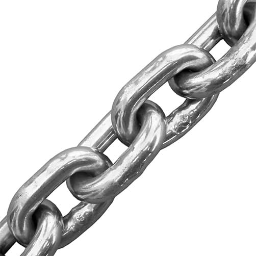
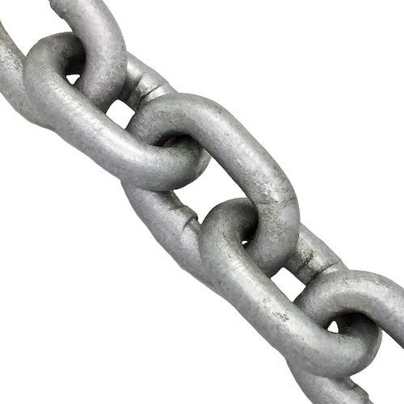
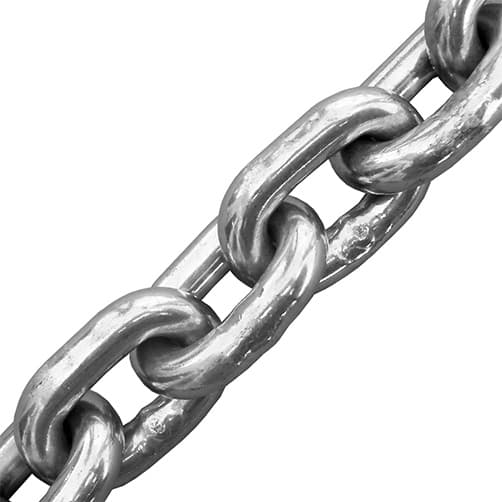
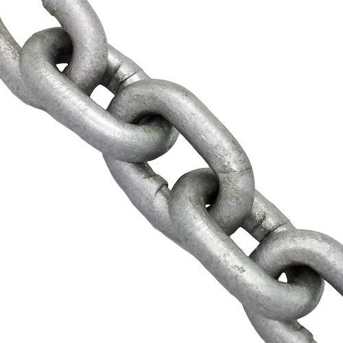

Chain
"A high-tensile chain, also referred to as a transport chain, is a link chain with a high tensile strength used for drawing or securing loads. This type of chain usually consist of broad (thick/heavy) metal, oblong torus-shaped links for high strength"1
 



The original images